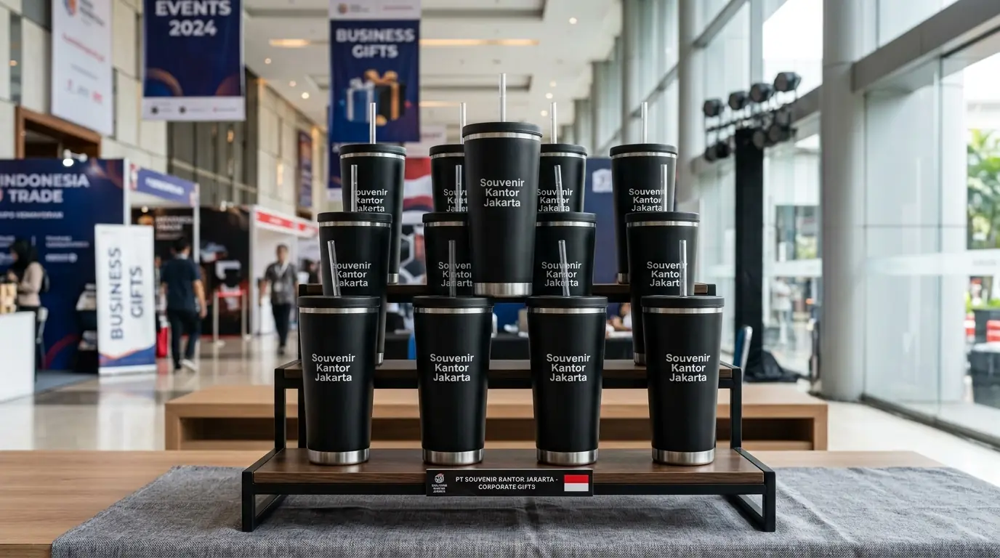

Tumbler Promosi Perusahaan Custom Logo Grosir
 Tim Redaksi Souvenir Kantor Jakarta
26 Agustus 2026
7 Menit Baca
Tim Redaksi Souvenir Kantor Jakarta
26 Agustus 2026
7 Menit Baca

Penggunaan media tempat minum promosi mencatatkan tingkat retensi merek paling tinggi dibandingkan barang cetak sekali pakai. Luasnya bidang permukaan botol memberikan fleksibilitas untuk menampilkan logo instansi, pesan kampanye, hingga alamat situs web. Pemesanan skema grosir memberikan penghematan biaya satuan yang signifikan bagi anggaran pemasaran acara. Penyedia terintegrasi di Jakarta menjamin kecepatan pengerjaan kilat untuk mengejar tenggat waktu pelaksanaan event.
Tumbler promosi perusahaan adalah media cenderamata kustom berlogo yang dirancang khusus untuk menarik perhatian calon mitra, meningkatkan visibilitas merek, dan memperkuat hubungan bisnis pada acara pameran maupun gathering.
- Mengapa Tumbler Promosi Perusahaan Sangat Efektif untuk Aktivasi Merek?
- Bagaimana Mengoptimalkan Anggaran Promosi Menggunakan Varian Tempat Minum Kustom?
- Bagaimana Ketepatan Waktu Produksi Memengaruhi Kesuksesan Agenda Event Perusahaan?
- Pertanyaan Umum Seputar Tumbler Promosi Perusahaan (FAQ)
- Kesimpulan Praktis
Mengapa Tumbler Promosi Perusahaan Sangat Efektif untuk Aktivasi Merek?
Tumbler promosi perusahaan sangat efektif untuk aktivasi merek karena langsung memberikan nilai guna nyata, bertahan lama, dan terus dibagikan ulang secara tidak langsung.
Penyelenggaraan acara pameran bisnis atau peluncuran produk membutuhkan sarana daya tarik yang mampu berkesan bagi pengunjung. Berdasarkan Laporan Efektivitas Media Promosi Corporate 2025/2026, lebih dari 82% pengunjung pameran menyimpan merchandise berupa tempat minum dan memakainya kembali dalam aktivitas sehari-hari. Hal ini menjadikan biaya per paparan (cost per impression) dari barang ini menjadi sangat ekonomis dalam jangka panjang.
Jangkauan Luas
Promosi pasif di ruang publikPersepsi Positif
Membangun asosiasi merek bonafideDesain Kreatif
Area permukaan luas untuk pesanKeunggulan utama penggunaan barang promosi fungsional meliputi:
- Memperluas Jangkauan Promosi: Penerima yang membawa wadah minum berlogo ke tempat gym, kantor, atau kafe secara tidak langsung mempromosikan instansi Anda.
- Meningkatkan Persepsi Positif: Memberikan cenderamata berkualitas membangun asosiasi bahwa instansi Anda bonafide dan menghargai relasi.
- Fleksibilitas Desain Grafis: Area permukaan yang melingkar memungkinkan pencetakan pesan pemasaran secara kreatif dan terlihat jelas.

Bagaimana Mengoptimalkan Anggaran Promosi Menggunakan Varian Tempat Minum Kustom?
Mengoptimalkan anggaran promosi dilakukan dengan membagi tingkatan target penerima, memilih material yang tepat, serta memanfaatkan skema diskon grosir.
Pengalokasian anggaran yang cerdas akan memberikan hasil promosi yang maksimal tanpa membebani kas perusahaan:
Kategori Massal
Pameran & Seminar Umum → Plastik BPA-free atau insert paper ekonomis.
Kategori VIP
Klien & Partner → Stainless steel termos insulasi vakum dengan grafir laser.
- Kategori Acara Massal (Pameran & Seminar Umum): Memilih varian plastik BPA-free atau tipe insert paper yang ekonomis namun tetap estetik.
- Kategori Tamu Khusus (Klien & Partner Bisnis): Mengalokasikan tipe stainless steel termos insulasi vakum dengan kustomisasi grafir laser eksklusif.
- Pemanfaatan Potongan Harga Grosir: Memesan dalam volume sekaligus untuk kebutuhan acara beberapa bulan ke depan guna memperoleh biaya satuan paling hemat.
Untuk memastikan kualitas hasil pencetakan logo instansi Anda tampil sempurna pada media promosi, percayakan pengerjaannya kepada Souvenir Kantor Jakarta.
Bagaimana Ketepatan Waktu Produksi Memengaruhi Kesuksesan Agenda Event Perusahaan?
Ketepatan waktu produksi memengaruhi kesuksesan agenda karena keterlambatan pengiriman merchandise dapat mengganggu kelancaran pembagian cenderamata saat acara berlangsung.
Persiapan acara korporat membutuhkan kepastian jadwal dari seluruh vendor penyedia. Vendor profesional menerapkan sistem manajemen produksi terencana untuk menjamin barang selesai tepat sebelum hari pelaksanaan:
Pemeriksaan Stok
Memastikan persediaan bahan baku siap cetak.
Pencetakan Ekspres
Mesin UV & laser kapasitas tinggi.
Pengiriman Terjadwal
Koordinasi armada kargo tepercaya.
Seluruh standar pelayanan tersebut dapat Anda peroleh dengan memesan cenderamata event melalui Souvenir Kantor Jakarta.
Pertanyaan Umum Seputar Tumbler Promosi Perusahaan (FAQ)
Butuh Tumbler Promosi Perusahaan Custom Logo Grosir?
Konsultasikan kebutuhan tumbler promosi perusahaan custom logo untuk event dan pameran Anda dengan tim kami untuk mendapatkan rekomendasi produk dan penawaran terbaik.
Konsultasi SekarangKesimpulan Praktis
Tumbler promosi perusahaan merupakan investasi media pemasaran yang sangat berdaya guna untuk mengoptimalkan impresi merek pada setiap acara bisnis. Melalui pemilihan varian produk yang pas dan kualitas pencetakan logo yang tajam, pesan promosi instansi Anda akan tersampaikan secara efektif. Dapatkan penawaran grosir terbaik dan kepastian pengerjaan tepat waktu dengan memesan di Souvenir Kantor Jakarta sekarang juga.